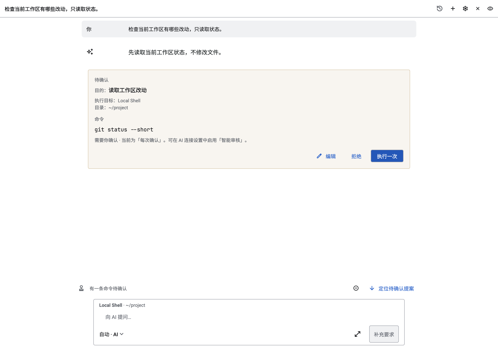
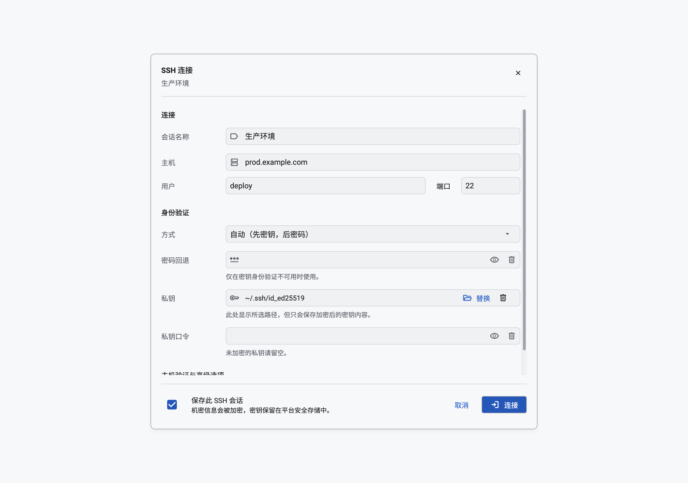
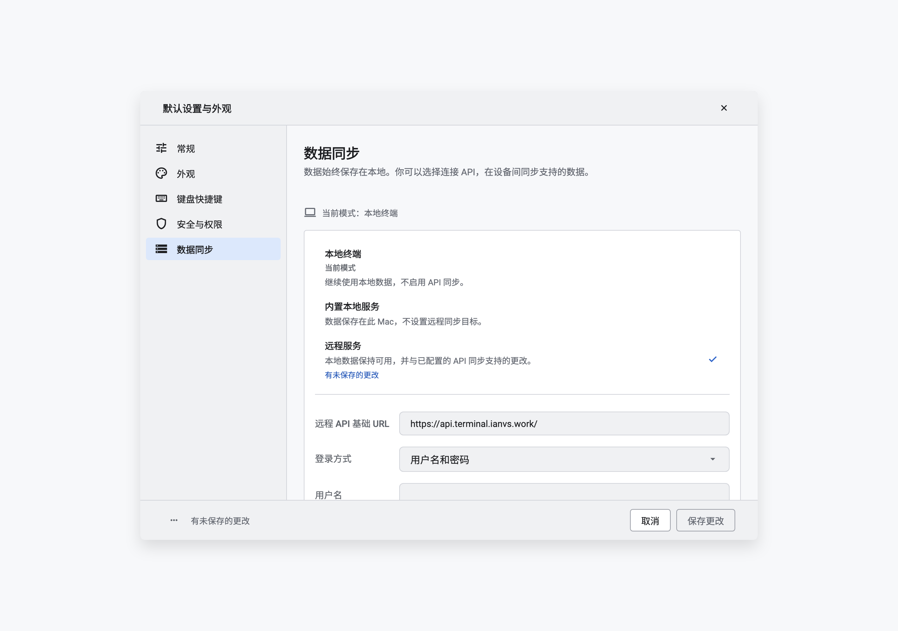
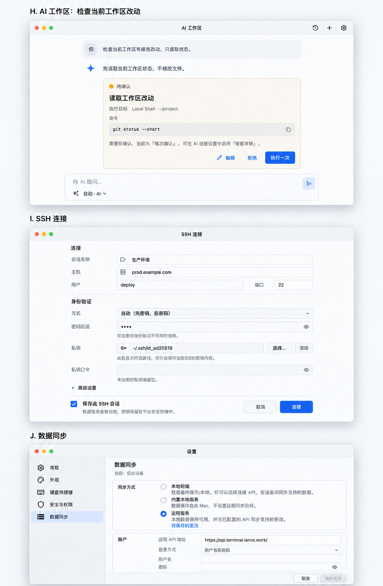

<!doctype html><html lang="zh-CN"><meta charset="utf-8"><meta name="viewport" content="width=device-width,initial-scale=1"><title>macOS · AI / SSH / 同步</title><style>*{box-sizing:border-box}body{margin:0;background:#f3f4f7;color:#172235;font:15px -apple-system,BlinkMacSystemFont,sans-serif}main{max-width:1280px;margin:auto;padding:28px}h1{font-size:29px;letter-spacing:-.6px;margin:0 0 12px}h2{font-size:22px;margin-top:28px}p{color:#526075;line-height:1.65}nav{display:flex;gap:8px;flex-wrap:wrap;margin:20px 0}a{color:#235bc4}nav a,button{background:#fff;border:1px solid #cfd6e1;border-radius:9px;padding:10px 14px;text-decoration:none;color:#235bc4;cursor:pointer}figure{margin:0}.shot{position:relative}.shot img{width:100%;display:block}.before{display:flex;gap:16px;justify-content:center}.before figure{flex:1;min-width:0}.before img{width:100%;display:block}.before figcaption{padding:8px;font-weight:600}.box{position:absolute;border:2px solid #bd4b15;border-radius:6px}.box b{position:absolute;left:-14px;top:-14px;width:28px;height:28px;border-radius:50%;background:#b8450e;color:white;border:2px solid white;text-align:center;line-height:24px;font-size:13px}.notes{display:grid;grid-template-columns:repeat(3,1fr);gap:12px;margin-top:16px}.notes div{background:white;padding:16px;line-height:1.6;border-left:3px solid #bd4b15}table{border-collapse:collapse;width:100%;font-size:14px;background:white}th,td{padding:14px;text-align:left;vertical-align:top;border-bottom:1px solid #e0e4ec;line-height:1.6}th{background:#e9edf4}td:first-child{font-weight:600;min-width:140px}.notice{border-left:4px solid #235bc4;background:#eaf0fc;padding:14px 18px;line-height:1.6}.warn{background:#fff6e7;border-left:4px solid #bc7420;padding:14px;margin:16px 0;line-height:1.6}details{margin:20px 0}summary{font-weight:600;cursor:pointer;padding:12px 0}footer{margin:28px 0;color:#627086;font-size:13px;line-height:1.6}.cards{display:grid;grid-template-columns:repeat(2,1fr);gap:16px}.cards a{padding:22px;background:white;border-radius:16px;text-decoration:none}.cards strong{display:block;font-size:20px;margin-bottom:10px}.hero{max-height:600px;object-fit:contain;width:100%;background:#e8edf4}@media(max-width:800px){main{padding:16px}.notes,.cards{grid-template-columns:1fr}table{display:block;overflow:auto}.before{gap:6px}}@media print{nav,button{display:none}}</style><main><h1>macOS · AI / SSH / 同步</h1><nav><a href="index.html">总览</a><a href="history.html">历史</a><a href="ios-core.html">iOS 核心</a><a href="ios-support.html">iOS 其他</a><a href="mac-core.html">Mac 核心</a><a href="mac-support.html">Mac 其他</a><a href="states.html">深色与状态</a><a href="tokens.html">完整标注规范</a></nav><div class="notice">当前组件截图 → 新方向概念图。点击图片查看原尺寸；橙色标注包含设计调整和图稿待修正点。</div><details open id="current"><summary>修改前 · 当前界面</summary><div class="before"><figure><a href="assets/macos-ai-light.png"></a><figcaption>H · AI</figcaption></figure><figure><a href="assets/macOS-light-portrait-ssh.png"></a><figcaption>I · SSH</figcaption></figure><figure><a href="assets/macOS-light-portrait-settings-remote.png"></a><figcaption>J · 同步</figcaption></figure></div></details><h2>设计方案 · 编号标注</h2><button onclick="document.querySelectorAll('.box').forEach(e=>e.hidden=!e.hidden)">显示 / 隐藏标注</button><p>数字与参数以本页规范为准，概念像素不作为精确测量依据。</p><div class="shot"><a href="assets/mac-core.png"></a><div class="box" style="left:26%;top:13%;width:53%;height:16%"><b>H</b></div><div class="box" style="left:18%;top:41%;width:64%;height:26%"><b>I</b></div><div class="box" style="left:9%;top:79%;width:18%;height:17%"><b>J1</b></div><div class="box" style="left:29%;top:81%;width:62%;height:17%"><b>J2</b></div></div><div class="notes"><div><strong>H</strong><br>审批沿用880阅读宽度，内容13–14；编辑/拒绝/执行一次保留。</div><div><strong>I</strong><br>桌面左侧标签110–120、输入32高；端口不藏，凭据清除不删。</div><div><strong>J1</strong><br>侧栏200–220；保持桌面分区、键盘焦点及缩放行为。</div><div><strong>J2</strong><br>模式与账户分组，当前和待保存独立；取消重复说明卡。</div></div><div class="warn">图稿窗口边缘为概念构图，不规定生产窗口尺寸。底部操作在小窗口仍需可达，不能只依赖屏幕底边。</div><h2>精确设计目标与行为保留</h2><table><thead><tr><th>场景</th><th>当前问题</th><th>拟调整</th><th>目标参数</th><th>必须保留</th></tr></thead><tbody><tr><td>H · macOS AI</td><td>桌面大面积留白但审批内容层级弱</td><td>保留880阅读宽度；紧凑审批和编辑/拒绝/执行一次</td><td>正文13–14；目的16；代码13等宽；卡内16；控件28–32</td><td>执行守卫不改；Tab顺序合理；Cmd+Return等只沿用已有绑定，不新增危险默认</td></tr><tr><td>I · macOS SSH</td><td>字段同权重、桌面与触控风格混杂</td><td>左标签+紧凑输入；横向保留用户/端口</td><td>标签列110–120；字段高32；行距12；组距24</td><td>保留密码/密钥清除意图；Enter按当前表单语义；Esc关闭但未保存变更需保护</td></tr><tr><td>J · macOS同步</td><td>说明卡与模式列表重复</td><td>侧栏选区+两组紧凑表单；顶部当前模式</td><td>侧栏200–220；内容边距24；字段32；正文13</td><td>不把底部按钮作为唯一可达路径；键盘可达；未保存与已生效持续区分</td></tr></tbody></table><footer>2026-11-01 · 视觉设计评审稿，非已实现界面。当前图来自真实 Flutter 组件测试夹具，方案图为 Image Gen 概念稿；编号和参数为设计标注，不是已测量值。<br>实际功能、文案与安全守卫以规范表为准；后续只用模拟器验证，不操作手机。</footer></main></html>